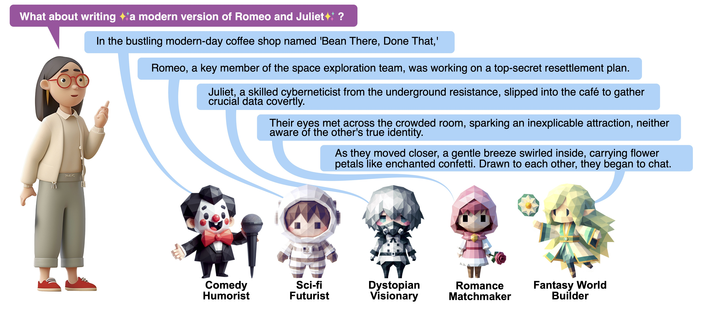

1Peking University
2State Key Laboratory of General Artificial Intelligence
3Tsinghua University
*Equal Contribution ✉️Corresponding Author

Abstract
Large Language Models show promise for AI-assisted storytelling, yet current tools often generate predictable, unoriginal narratives. To address this limitation, we present NarrativeLoom, a multi-persona co-creative system grounded in Campbell's Blind Variation and Selective Retention theory. NarrativeLoom deploys specialized AI personas to generate diverse narrative options (blind variation), while users act as creative directors to select and refine them (selective retention). We designed a controlled study with 50 participants and found that stories co-authored with NarrativeLoom were not only perceived by users as more novel and diverse but were also objectively rated by experts as significantly better across all Torrance Test creativity dimensions: fluency, flexibility, originality, and elaboration. Stories are significantly longer with richer settings and more dialogue. Writing expertise emerged as a moderator: novices benefited more from structured scaffolding. This demonstrates the value of theory-informed co-creative systems and the importance of adapting them to varying user expertise.
Method Overview
NarrativeLoom is a human–AI co-creative storytelling system inspired by Blind Variation and Selective Retention (BVSR) theory. For each story beat, multiple specialized AI personas generate diverse narrative alternatives in parallel, encouraging exploration across different genres and narrative logics.
Writers act as creative directors by selecting and editing preferred story beats, which are represented as structured narrative units and iteratively expanded into prose. A soft consistency controller tracks story history to support coherence without restricting creative divergence. Through repeated cycles of variation and selection, NarrativeLoom balances narrative diversity with human creative control.